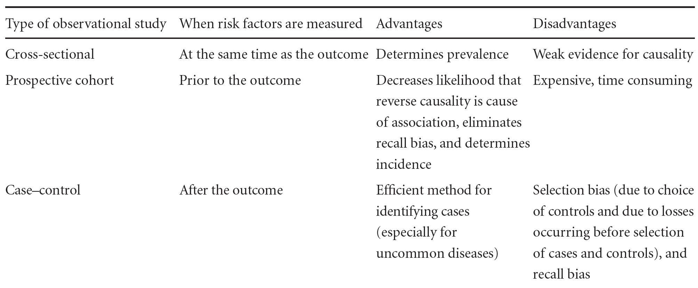

Chapter 8 Observational studies

8.1 Why do we need observational studies?
Randomized controlled trials are often the best design for studying causal effects, but they are not always possible. In many real settings, randomization is not ethical, not practical, or too expensive. In addition, patients enrolled in randomized trials are often more selected than the patients seen in routine care, so trial results may not generalize perfectly to the target population.
For these reasons, observational studies remain essential in medical research. In an observational study, the researcher does not assign the exposure. Instead, the exposure and the outcome are observed as they occur in practice.
The main strength of randomized trials is that randomization makes causal interpretation easier. But observational designs are needed whenever an exposure cannot realistically or ethically be assigned.
In this section we look at three common observational designs:
- cross-sectional studies;
- cohort studies;
- case-control studies.
8.2 Classifying observational studies
A useful way to distinguish the three designs is by asking when exposure and outcome are assessed.
- In a cross-sectional study, exposure and outcome are measured at the same moment.
- In a cohort study, we start from exposure status and follow people forward to see who develops the outcome.
- In a case-control study, we start from outcome status and then look backward for prior exposure.
A short memory aid is:
- cross-sectional = snapshot;
- cohort = from exposure to outcome;
- case-control = from outcome back to exposure.
8.3 Cross-sectional studies
A cross-sectional study gives a snapshot of a population at one point in time. Its main use is to estimate prevalence, that is, the proportion of individuals in the population who currently have a disease or condition.
Its main limitation is that exposure and outcome are observed at the same time. So if an association is found, we usually cannot tell whether the exposure caused the outcome or whether the outcome influenced the exposure.
Cross-sectional studies are therefore useful for describing how common a condition is, but they are much weaker for causal interpretation.
8.3.1 Working example
Suppose that 300 adults are surveyed during a clinic visit, and both obesity status and arthritis status are recorded at that same visit.
cross.tab <- matrix(
c(36, 84,
24, 156),
nrow = 2,
byrow = TRUE,
dimnames = list(
Obesity = c("Yes", "No"),
Arthritis = c("Yes", "No")
)
)
cross.tab## Arthritis
## Obesity Yes No
## Yes 36 84
## No 24 156The overall prevalence of arthritis is:
## [1] 0.2So in this cross-sectional sample, the prevalence of arthritis is 20%.
We can also compare the prevalence of arthritis between obese and non-obese individuals.
## Arthritis
## Obesity Yes No
## Yes 0.3000000 0.7000000
## No 0.1333333 0.8666667The obese group has a higher prevalence of arthritis in this snapshot. But this does not establish a causal direction. A cross-sectional study cannot answer whether obesity increased the risk of arthritis, whether arthritis reduced physical activity and increased obesity, or whether both are related to other factors.
Another important limitation is that cross-sectional studies estimate prevalence, not incidence. They describe how much disease is present at a given time, not how often new disease occurs over time.
8.4 Cohort studies
Let’s consider a standard 2 \(\times\) 2 table
\[ \begin{array}{c|cc} & \text{Disease Yes} & \text{Disease No} \\ \hline \text{Exposure Yes} & a & b \\ \text{Exposure No} & c & d \end{array} \]
A cohort study starts with exposure status and follows individuals forward in time to observe whether the outcome occurs. Because the outcome happens after exposure assessment, this design is more natural than a cross-sectional study for studying incidence and risk.

Important strengths of cohort studies are:
- incidence can be estimated;
- several outcomes can be studied for the same exposure;
- exposures that cannot be randomized can still be studied;
- external validity is often higher than in a highly selected randomized trial.
Important limitations are:
- confounding and selection bias are still concerns;
- causal interpretation requires strong assumptions;
- long follow-up may be expensive and time-consuming.
In a randomized trial, randomization helps make treated and untreated groups comparable. In a cohort study, there is no such protection. Any causal interpretation therefore depends on correctly adjusting for systematic differences between exposed and unexposed individuals.
This is difficult in practice, because it requires both:
- a reasonable causal model;
- measurement of all important variables that need adjustment.
So cohort studies provide valuable information, but they must be designed and interpreted with care.
8.4.1 Working example
Consider a cohort of 200 individuals followed for a fixed period. At baseline, 100 are exposed and 100 are unexposed. During follow-up, disease occurs in 40 exposed individuals and 10 unexposed individuals.
cohort.tab <- matrix(
c(40, 60,
10, 90),
nrow = 2,
byrow = TRUE,
dimnames = list(
Exposure = c("Yes", "No"),
Disease = c("Yes", "No")
)
)
cohort.tab## Disease
## Exposure Yes No
## Yes 40 60
## No 10 90The risk of disease in each group is:
risk.exposed <- cohort.tab["Yes", "Yes"] / sum(cohort.tab["Yes", ])
risk.unexposed <- cohort.tab["No", "Yes"] / sum(cohort.tab["No", ])
risk.exposed## [1] 0.4## [1] 0.1The relative risk (or risk ratio) is therefore:
rr.cohort <- ( cohort.tab["Yes", "Yes"] / sum(cohort.tab["Yes", ]) )/ (cohort.tab["No", "Yes"] / sum(cohort.tab["No", ]))
rr.cohort## [1] 4So the disease risk is 4 times as high in the exposed group as in the unexposed group.
Because this is a cohort design, these risks are meaningful: the denominators come from the numbers at risk in the exposed and unexposed groups.
8.5 Case-control studies
A case-control study starts with the outcome. We first identify cases with the disease and controls without the disease, and then compare how common previous exposure was in the two groups.

This design is especially useful for rare diseases, because it would be inefficient to wait for rare cases to appear in a prospective cohort.
Case-control studies also require careful sampling.
- Cases should have a clearly defined disease or outcome.
- Controls should come from the same source population that gave rise to the cases.
- Control selection should not depend on the exposure of interest.
This last point is very important. For example, if the exposure is smoking, choosing partners or siblings of lung cancer cases as controls may be problematic because their smoking behavior may be more similar than in the general source population. Likewise, choosing controls with another disease related to the same exposure can also bias the comparison.
Other important limitations are:
- recall bias may affect how past exposure is reported;
- confounding and selection bias remain major concerns;
- matching can make groups more comparable, but it does not automatically remove all bias.
8.5.1 Why the relative risk cannot be estimated directly
In a case-control study, the investigator fixes how many cases and controls are sampled. That means the proportion with disease in the sample is determined by the study design, not by the underlying disease risk in the population.
So the usual cohort quantity
\[ \text{relative risk} = \frac{a / (a+b)}{c / (c+d)} \]
is not meaningful in a case-control sample.
8.5.2 Odds and the odds ratio
The appropriate association measure in a case-control study is usually the odds ratio.
Recall that odds are defined as
\[ \text{odds} = \frac{P(\text{event})}{1 - P(\text{event})}. \]
For example, the probability of rolling a 6 with a fair die is \(1/6\), while the odds of rolling a 6 are \(1/5\), because there is 1 favorable side and 5 unfavorable sides.
The odds ratio is
\[ \text{odds ratio} = \frac{a/b}{c/d} = \frac{ad}{bc}. \]
8.5.3 Working example
Suppose the same disease was originally studied in a cohort, but we now perform a case-control study by taking all 50 diseased individuals and a sample of 50 controls. The observed table becomes:
casecontrol.tab <- matrix(
c(40, 20,
10, 30),
nrow = 2,
byrow = TRUE,
dimnames = list(
Exposure = c("Yes", "No"),
Disease = c("Yes", "No")
)
)
casecontrol.tab## Disease
## Exposure Yes No
## Yes 40 20
## No 10 30The appropriate association measure is the odds ratio:
or.casecontrol <- (casecontrol.tab["Yes","Yes"]*casecontrol.tab["No","No"])/(casecontrol.tab["Yes","No"]*casecontrol.tab["No","Yes"])
or.casecontrol## [1] 6So the odds ratio is 6.
This is not the same as the cohort relative risk of 4. The odds ratio and relative risk are different quantities.
8.6 Rare disease approximation
When the disease is rare, the odds ratio from a case-control study is often close to the relative risk from the full cohort.
For example, suppose the cohort table is:
rare.cohort <- matrix(
c(4, 60,
1, 90),
nrow = 2,
byrow = TRUE,
dimnames = list(
Exposure = c("Yes", "No"),
Disease = c("Yes", "No")
)
)
rare.cohort## Disease
## Exposure Yes No
## Yes 4 60
## No 1 90The corresponding relative risk is:
rr.rare <- ( rare.cohort["Yes", "Yes"] / sum(rare.cohort["Yes", ]) )/ (rare.cohort["No", "Yes"] / sum(rare.cohort["No", ]))
rr.rare## [1] 5.6875Now suppose a case-control sample produces:
rare.cc <- matrix(
c(4, 20,
1, 30),
nrow = 2,
byrow = TRUE,
dimnames = list(
Exposure = c("Yes", "No"),
Disease = c("Yes", "No")
)
)
rare.cc## Disease
## Exposure Yes No
## Yes 4 20
## No 1 30Its odds ratio is:
or.rare <- (rare.cc["Yes","Yes"]*rare.cc["No","No"])/(rare.cc["Yes","No"]*rare.cc["No","Yes"])
or.rare## [1] 6Here the relative risk is about 5.69 and the odds ratio is 6, so they are close. This is the usual rare-disease approximation.
8.7 Summary
The main ideas of this section are:
- cross-sectional studies are useful for prevalence, but weak for causal interpretation;
- cohort studies allow direct estimation of incidence and relative risks;
- case-control studies are efficient for rare diseases and usually rely on the odds ratio;
- in case-control studies, controls must represent the same source population as the cases;
- when the disease is rare, the odds ratio often approximates the relative risk.
In practice, the question we want to answer determines the choice of the study design and of the measure of association.
